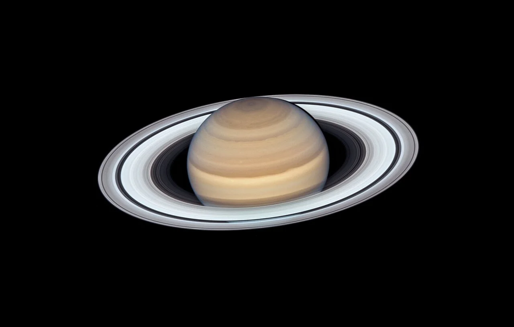

Unser Sonnensystem
Saturn: der Ringplanet mit geringer Dichte
Saturn ist der zweitgrößte Planet des Sonnensystems, ein Gasriese aus Wasserstoff und Helium mit 9,45 Erdradien und 95 Erdmassen. Er umrundet die Sonne in 29,4 Jahren im Abstand von 9,6 AE. Seine mittlere Dichte von 687 kg/m³ ist geringer als die von Wasser. Die Ringe bestehen aus Milliarden von Brocken aus Eis und Gestein.
Bei den Exoplaneten zählen Planeten von der Größe Saturns oder Jupiters und darüber zu den Gasriesen. Ein Beispiel mit etwa Saturnmasse ist WASP-39 b: Er umkreist seinen Stern sehr eng, ist rund 900 °C heiß und auf das 1,3-Fache des Jupiterdurchmessers aufgebläht. Die Gasriesen des Sonnensystems sind dagegen kühl und kompakt.
Monde: Saturn hat 293 bestätigte Monde (Stand August 2026), weit mehr als jeder andere Planet. Titan, der größte, ist größer als Merkur und der einzige Mond mit dichter Atmosphäre; auf seiner Oberfläche gibt es Seen und Meere aus flüssigem Methan und Ethan. Der nur etwa 500 km große Enceladus stößt Fontänen aus Wasserdampf und Eisteilchen aus; sie stammen aus einem Ozean unter seiner Eiskruste und bilden Saturns E-Ring.
Quellen: NASA (NSSDCA): "Planetary Fact Sheet – Metric.", abgerufen am 20.11.2026; NASA (NSSDCA): "Planetary Fact Sheet – Ratio to Earth Values.", abgerufen am 20.11.2026; NASA Science: "Saturn: Facts.", abgerufen am 20.11.2026; NASA Science: "Saturn Moons.", abgerufen am 20.11.2026; NASA Science: "Titan.", abgerufen am 20.11.2026; NASA Science: "Enceladus.", abgerufen am 20.11.2026; NASA/JPL Solar System Dynamics: "Planetary Satellite Discovery Circumstances.", abgerufen am 20.11.2026; NASA Science: "Exoplanets – Planet Types: Overview.", abgerufen am 20.11.2026; NASA Science: "NASA's Webb Detects Carbon Dioxide in Exoplanet Atmosphere.", abgerufen am 20.11.2026